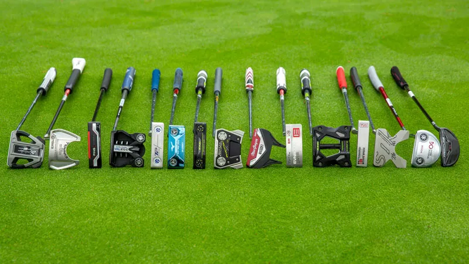

Putters


The Spider line’s complete re-imagination combines the forgiveness from previous models with the feel and performance of the front-loaded Spider FCG for a best-of-both-worlds putter. TaylorMade took a risk by altering the look of one of the most popular putters in the game. But the Spider is one of the gratests.

When Scotty Cameron, who has been at this putter thing for more than three decades, decided to take his most famous models back to their roots, he clearly knew where he was going. The construction produces the consistent impact, feel and response preferred by expanding stable of tour players.

This distinction between mallet and blade seems so binary, especially when you look at a multimaterial putter like this one. Although the multiple versions here all look like slick blades, each head is infused with enough tungsten to account for half its weight, bringing more confidence and sensitivity to te player.